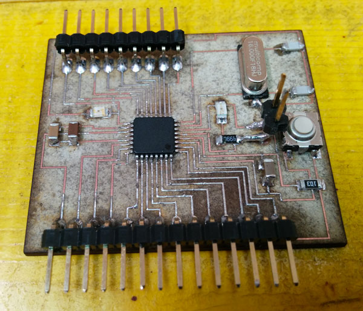
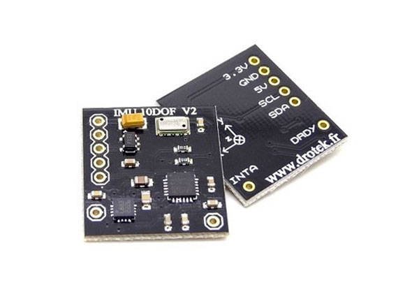
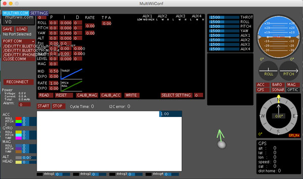
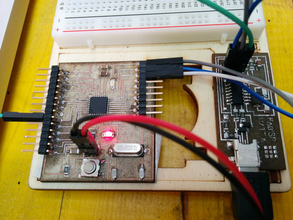
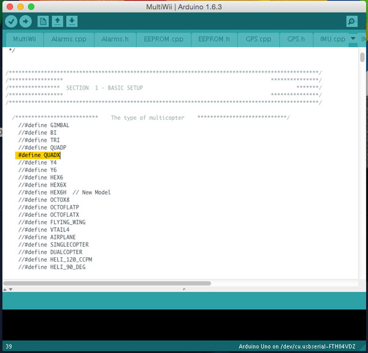
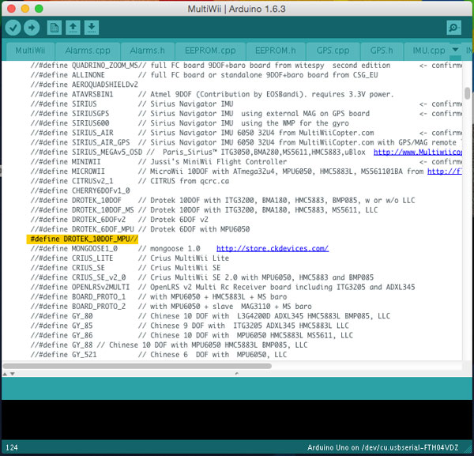
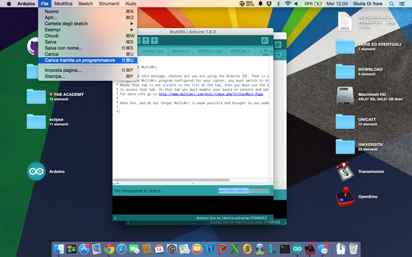
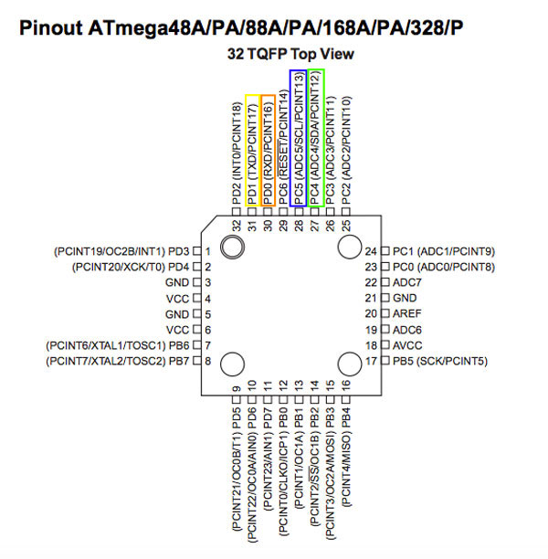
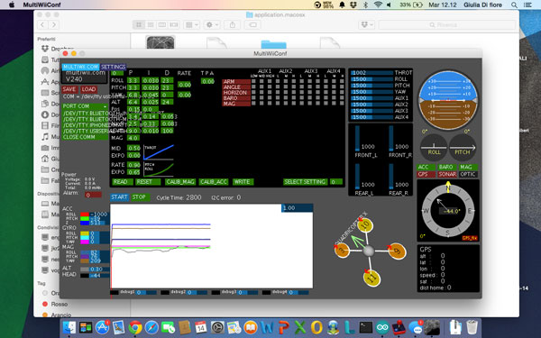

Lesson n. 10:Input Devices
The Input Devices assignment is to measure something, adding a sensor to a microcontroller board that you've designed, and read it.
The Microcontroller Board
For the exercise of this week, I and some my classmates, we used an improved version of FabKit by Daniele Ingrassia, the SatshaKit.

........ ....... ....... ......
The Sensor
For the input device assignment, i decided to work with a possible sensor for the final project: the IMU 10DOF by Drotek.
This sensor integrates MPU6050 gyro + accelerometer, HMC5883L magnetometer and MS5611 altimeter. This type of IMU is widely used in drones as it has all the equipment for the control of the flight, but in my case what interests me is the only part of the accelerometer and gyroscope.

Software
To communicate with the sensor and read data from it, I used the MultiWii.
MultiWii is an open source software project aiming to provide the brain of a RC controlled multi rotor flying platform. It is compatible with several hardware boards and sensors.
One of the strengths of MultiWii is its GUI, who provide to the graphical visualization of sensors, motors and RC signal.

On the Google code page of the MultiWII you can download the lastest version (I used the version 2.4), which includes the GUI (for each OS) and files to be loaded into the microcontroller.
In the .zip file that you download from the site, there are two folders:
- MultiWii, which contain the program that you have to upload on the microcontroller;
- MultiWiiConf, which contain the GUI for each operating system.
Program the Microcontroller
First of all, after soldering the components on the Satshakit board, you have to load the bootloader via the Arduino IDE. To do this, you have to connect the board to FabISP using only the following pins: RESET, SCK, MOSI and MISO. Before writing the bootloader on the board, make sure you give it the power using the FTDI cable.

After connecting the board with FabISP, open the Arduino IDE, select "Arduino Uno" as a board and "USBtinyISP" as a programmer and then we can press "burn the bootloader".
Once wrote the bootloader, we can move to import in our board's program MultiWii. Also through the Arduino IDE, open the file "MultiWII.ino" located in the folder MultiWii.
Before uploading the program you have to edit the file "config.h" to configure the program for use it whit the IMU 10DOF. In the file you have to uncomment 2 line:
- #define QUADX
- #define DROTEK_10DOF_MPU//


After do this the program is ready to be uploaded in the microcontroller (always using the FabISP).

After programming the board you have to disconnect it from the FabISP and connect the IMU 10DOF to it. A useful thing is to keep open the datasheet of the ATmega328 to check the name of the pins.

Connect the TX and RX pins of the board to the corresponding pins on the FTDI cable.
Connect the SDA and SCL pins on the board to the corresponding pins on the IMU 10DOF.
Once connected the IMU to the board, connect the FTDI cable to the computer and open the GUI MultiWii, select the FTDI port and press start: if connections were made in the right way you should receive the data of the IMU directly on pc.
